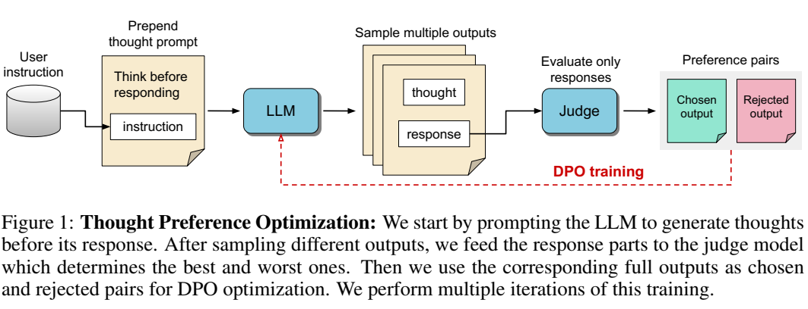
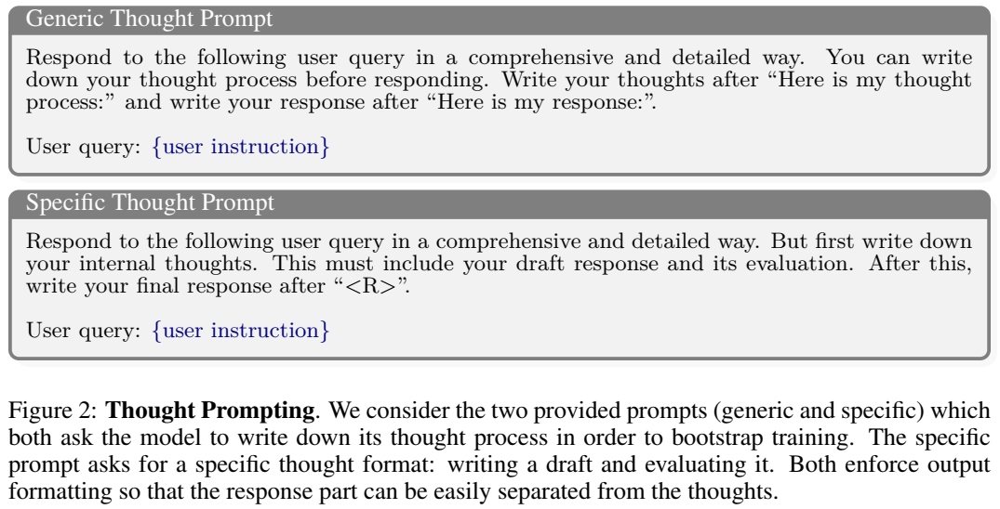

论文阅读十九：思维LLMS：思维生成的一般指导
摘要
LLM通常经过培训，能够回答用户问题或遵循指示，类似于人类专家的反应方式。然而，在标准的对齐框架内，它们缺少回答前显式思考的基本能力。思考对于需要推理和规划的复杂问题是重要的，但可以用于任意任务。我们提出了一种训练方法，在不使用额外人工数据的情况下，为现有的LLM配备这种思维能力，以便进行一般指导。我们通过迭代搜索和优化过程来实现这一点，该过程探索了可能的思维生成空间，使模型能够在没有直接监督的情况下学习如何思考。对于每一条指令，使用判断模型对候选思维进行评分，仅评估他们的反应，然后通过偏好优化进行优化。我们发现，这一程序在AlpacaEval和Arena Hard上表现优异，除了更传统的推理和解决问题的任务外，还可以从营销、健康和常识等非推理类别的思考中获益。
引言
大型语言模型（LLM）基于Transformer架构（Vaswani等人，2017），该架构预测每一步的下一个标记。每个标记需要相同的计算量，因此当LLM收到用户指令提示时，无论指令的复杂性如何，它们都有固定的计算预算来生成第一个响应标记。增加更难指令的计算预算的一种方法是允许LLM在输出响应之前进行内部思考。这类似于人类在回答复杂问题之前需要更多的时间和思考。
一种方法是将思维转化为文本，这利用了LLM的自然语言能力。LLM是在包含人类书面思维的文本上预先训练的，因此这些思维被编码到模型中。思维链（CoT）（Wei等人，2022）是一种广泛使用的提示技术，通过要求模型写下其推理步骤来引发这种行为。然而，CoT的使用主要局限于数学和推理任务。Sprague等人（2024）的荟萃分析发现，CoT方法对不涉及数学和逻辑的任务没有帮助。
在这篇论文中，我们专注于一般的指令遵循，而不是专注于数学或逻辑任务。我们认为“思考”应该具有广泛的效用。例如，在创意写作任务中，内部思维可以用来规划整体结构和人物。在其他任务中，内部思维可用于更好地理解用户指令。当然，对于更简单的任务，可能需要更少的思考，而对于更复杂的任务，则需要更多的思考。总的来说，我们假设这种思维LLMs在所有足够复杂的任务上都有优势。最近出现的商业产品，如OpenAI-O1（OpenAI），也支持了我们的动机。
然而，由于缺乏监督训练数据，训练模型进行思考具有挑战性。尽管预训练数据确实包含有价值的信息，但在某些领域的覆盖范围可能有限，因为人类写作中经常省略内部思想。现有的训练后数据集通常由人类反应或对反应的偏好组成，没有关于思维过程的信息。现有的奖励模式也是如此。再加上收集人类思维数据的难度和成本考虑，这些因素给训练思维LLMs带来了障碍。
本文的目的是研究在没有任何额外数据的情况下，将现有的LLM转换为跨各种任务工作的Thinking LLM的可能性。为此，我们引入了思维偏好优化（TPO），它进一步训练了一个指令调优的LLM，使其能够有内部思维。我们的方法很简单，可以重用现有训练管道的许多部分。LLM首先被指示生成一个输出序列，该序列可分为思维和响应部分。思考部分被认为是内部的，而不是向用户显示的响应的一部分。我们通过迭代式人工智能反馈强化学习（RLAIF）训练来优化这种思维和反应输出。我们依赖于一个标准的判断模型，该模型仅用于评估反应，并通过诱导的反应隐含地判断思维的质量。这具有不需要人类策划的想法或能够评估想法的特殊判断模型的优点。通过偏好优化，对想法进行优化，以改善最终的反应。这与Snell等人（2024）的最新研究形成鲜明对比；Kumar等人（2024b）使用额外的监督信号来指导模型进行自细化或自校正。我们不直接指导内部思维过程，而是让模型独立学习思考。
鉴于大量证据表明CoT在数学或编码等基于逻辑的任务上的有效性，我们将实验重点放在一般教学上。我们根据不同的用户指令进行训练，并在AlpacaEval和Arena Hard上评估我们的模型，这些基准测试了一般指令的遵循情况。我们分别获得了52.5%和37.3%的强胜率，超过了没有明确思考的直接LLM对手。我们还进行了更细粒度的评估，以确定哪些类型的指令从思维中受益。令人惊讶的是，我们观察到，思维不仅有利于推理和解决问题等主题，而且在推理领域通常不考虑的类别（如常识、营销和健康）上也有更好的表现。这为开发旨在遵循一般指导而不是专门从事更狭窄技术领域的思维LLMs开辟了新的机会。
思维偏好优化
我们现在描述我们的思维偏好优化（TPO）方法，用于教导LLM在做出回应之前进行思考，如图1所示。我们从一个典型的指令调优LLM开始，它在用户指令之后直接输出响应。我们假设没有提供可以微调的标记思维数据，这使得训练更具挑战性。相反，作为引导我们训练过程的起点，对于给定的训练用户指令，我们提示模型生成其思维过程，然后是响应。对多个这样的输出进行采样，然后我们仅根据响应的质量使用偏好优化来提高思维（和配对响应）的质量。

从思维LLMs中生成思维
理想情况下，思想生成应该简单，并与现有的LLM基础设施兼容。因此，我们保持模型架构不变，作为自回归变换器，尽管我们的方法可能与输出令牌序列的任何模型兼容。在推理时，核心过程是输出由两部分组成：思想部分和反应部分，两者都是自然语言。生成后，而不是直接发送整个标记序列给用户，我们通过将其分割为两部分来预处理它，并且仅发送对应部分。
在训练开始时，我们通过提示模型编写其思维过程来实现这一点。我们考虑两种可能的思维提示，如图2所示。为了将思想与答案分开，我们需要模型遵循严格的格式。思维提示包含模型应使用的固定关键字，以便我们可以使用简单的字符串匹配来定位响应部分的开始位置。

思维提示类型虽然训练过程会改变和优化思维类型，但最初的思维仍然很重要，因为它们是一个起点。图2（上图）中给出的第一个想法提示更为通用，由模型决定想法将包含什么。我们还尝试了一个更具体的思维提示，如图2（底部）所示，该提示指定思维应包含一个草稿响应及其评估。这种特定的提示使我们能够更好地控制思想的内容，但也需要专家了解哪种类型的思想对LLM有帮助。
让思想内化正如我们提到的，思考部分将对最终用户隐藏，只有响应部分将提供给他们。这将我们的输出与CoT提示区分开来，在CoT提示中，推理步骤通常成为整体响应的一部分，有时没有明确的区别。虽然后者在某些情况下可能有用，比如解决数学问题，但一般来说，用户希望在没有过多中间推理步骤的情况下收到响应。隐藏思想部分允许它采取许多用户通常不感兴趣的形式：犯错误、起草回复并对其进行评估、试图更好地理解问题等。当然，我们也可以提供一个选项，向用户展示思维部分，以便于解释和分析响应背后的潜在思维过程。
理论上，思想可以采取由生成的符号组成的任何形式，甚至不必使用自然语言。他们的主要目标是允许模型执行额外的计算，以提高响应的质量（Pfau等人，2024）。然而，自然语言中的思维有几个好处，例如利用人类编写的LLM预训练数据，并允许人类检查和解释模型的行为。因此，我们使用此设置是因为当前的LLM可以很好地用自然语言生成思想。
通过偏好优化优化思维
虽然我们最初的思想提示是通过指令调优模型产生思想的，但它们并没有被优化到在使反应更好方面真正有用。我们发现，它们通常表现不佳，而指令调优的LLM已经针对其进行了大量优化。
因此，我们需要训练我们的模型，以便更好地利用思维生成。我们采用人工智能反馈强化学习（RLAIF）范式（Bai等人，2022；Zhu等人，2024），在该范式中，我们从模型中生成结果，并使用充当评判者的奖励模型对其响应进行排序。特别是，我们使用迭代直接偏好优化（DPO）（Rafailov等人，2024；Xu等人，2023），因为它简单有效。
与传统的RLAIF不同，我们不会将整个模型输出提供给裁判。相反，法官只能看到输出的响应部分，因此思维部分不能影响其判断。我们选择这种方法有几个原因。首先，缺乏一个能够评估内部思想的法官模型。建立这样一个法官本身就具有挑战性，因为很难收集人类的思想。无论如何，即使收集了这些数据，也不清楚人类书写的想法是否对LLM同样有用。其次，最终目标是为用户提供更好的响应。因此，优化最终目标可能比依赖可能不太一致的辅助目标更好。
我们的训练从种子模型 开始，该模型经过指令调优，可以直接响应用户指令。我们还需要一个用户指令数据集 来开始训练模型。在每次训练迭代t中，我们向当前模型 提供指令以及我们的思维提示p，如第2.1节所述：
这里的“+”表示提示被连接为LLM的输入上下文。对于每个输入，我们对 个输出进行采样，每个输出都包含思想 和响应 部分。
构建偏好对 提取响应部分 后，我们将其馈送到判断模型 进行评分。对于接受单个响应并输出标量分数的逐点判断模型，过程很简单：
我们还考虑了接受一对响应并输出获胜者的判断模型。在这种情况下，我们将判断模型应用于反应集中的所有可能对{yim，yin}。这包括交换位置，以减少法官的位置偏差。一旦我们有了所有成对的获胜者，我们就会使用Wu等人（2024）的ELO评分将其转换为个人逐点得分ski。详见附录B。
接下来，我们选择得分最高和最低的回答作为“选择”和“拒绝”样本，以构建偏好对。请注意，偏好对包含思考和反应部分。
其中， ， 。
使用这个过程，模型可以学习导致更好响应的思维。
迭代训练一旦我们建立了偏好对，我们就使用它们和DPO损失来训练当前的模型Mt。这给了我们一个新的模型Mt+1，将用于下一次训练迭代。请注意，在假设先前迭代的质量较低的情况下，我们不使用从先前迭代中获得的数据来训练当前迭代。除了DPO，我们还对结合了DPO和NLL损耗的IRPO损耗进行了实验（Pang等人，2024）。
长度控制众所周知，一些判断模型倾向于支持更长的响应（Dubois等人，2024；Yuan等人，2024a）。这种长度偏差导致响应长度随着每次训练迭代而增长，从而导致模型过于冗长。为了减轻这种情况，我们实现了长度控制（LC）机制。让我们定义一个归一化函数 。我们通过惩罚较长的回答来重新计算分数
超参数 控制长度控制机制的强度。请注意，我们对分数和长度进行了归一化处理，以将它们对齐到一个类似的量表中。
结论
在本文中，我们介绍了Thinking LLMs，它在为一般教学任务撰写回复之前用自然语言思考。为了训练这些模型，我们提出了一种新的训练方法，称为思维偏好优化，用于教授思维LLMs，以提高他们的思维能力。与之前的方法（Snell等人，2024；Kumar等人，2024b）不同，这些方法通过自我纠正或自我完善等技术直接监督思维生成过程，我们为模型生成自己的思维提供了激励，而没有明确地教它如何思考。在我们的实验中，我们按照设置后的一般说明训练和评估模型。基准测试结果表明，与典型的直接响应模型相比，Thinking LLM的初始种子模型和第一次迭代训练表现不佳。然而，在使用TPO进行多次迭代训练后，我们的方法表现优于基线。此外，细粒度的评估表明，思维在通常与推理或思维链方法无关的类别中有所帮助。这是一个令人鼓舞的结果，希望能在非推理领域更广泛地采用Thinking LLMs。
限制
我们尝试了两种不同的思维提示，并观察到它们之间的一些性能差异。某些思维类型可能适合某些任务，直接反应在某些情况下甚至会更好。因此，对一组不同的思维提示进行训练，并允许模型在它们之间切换，可能会进一步提高性能。这将使模型能够更好地搜索可能的想法空间，以便学会选择最合适的想法。然而，我们还没有进行这些实验。
虽然我们看到TPO的整体性能有所提高，但对GSM8K的评估显示数学性能下降。正如我们所讨论的，这可能是由于我们的设置没有面向此类任务。在培训过程中加入更多的数学指导，并让能够评估答案的法官参与进来，可能是解决方案。
在当前版本的方法中，思维长度完全由模型本身决定。在改变思维标记的数量方面没有可操纵性。添加这样的功能可能很有用，因为较长的思考会增加计算量和相应的每用户指令成本。我们可以使用袁等人（2024a）的技术来实现这一目的。
我们所有的实验都是基于8B参数大小的模型。然而，值得研究思维对大规模模型的影响。鉴于此类实验的计算要求，我们将其留给未来的工作。